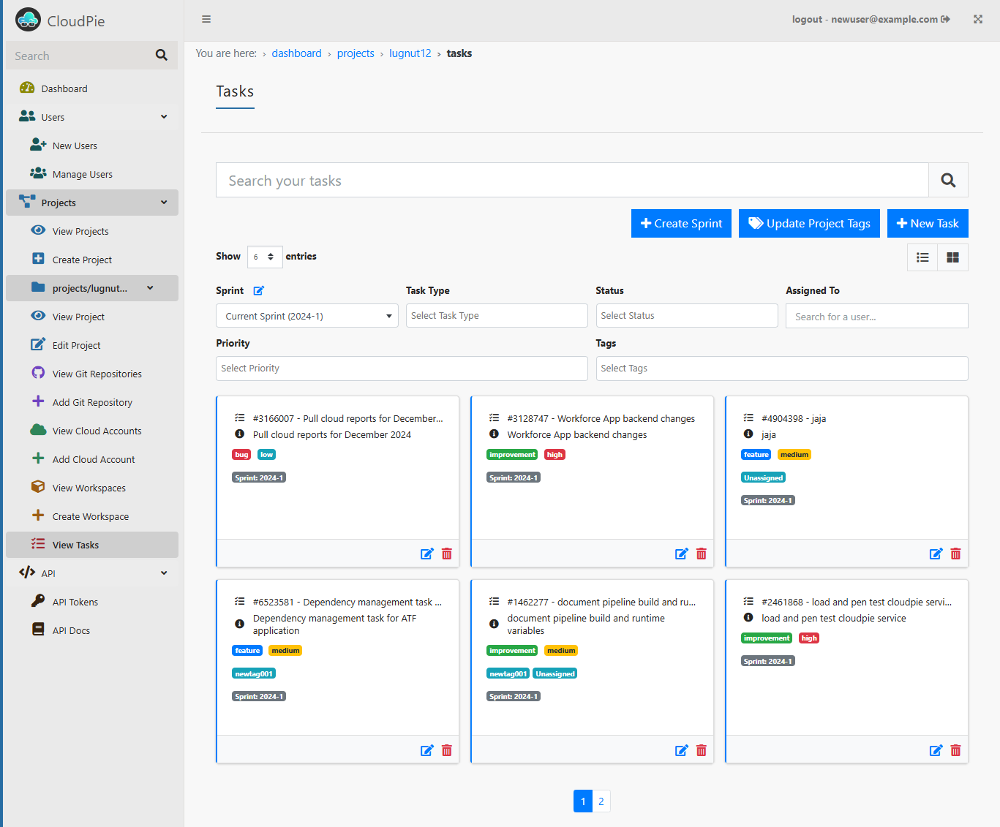
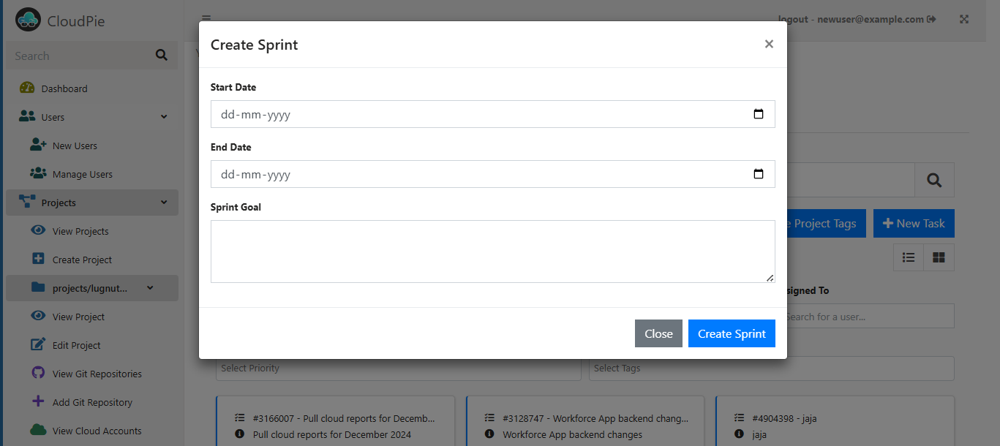
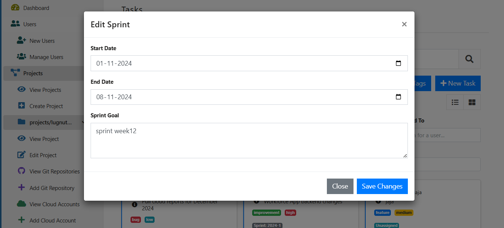
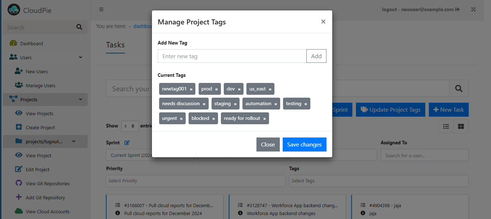
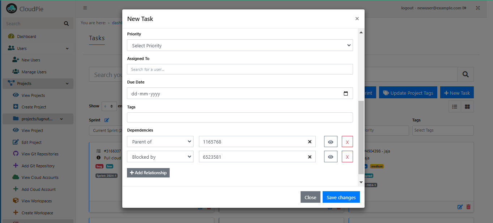
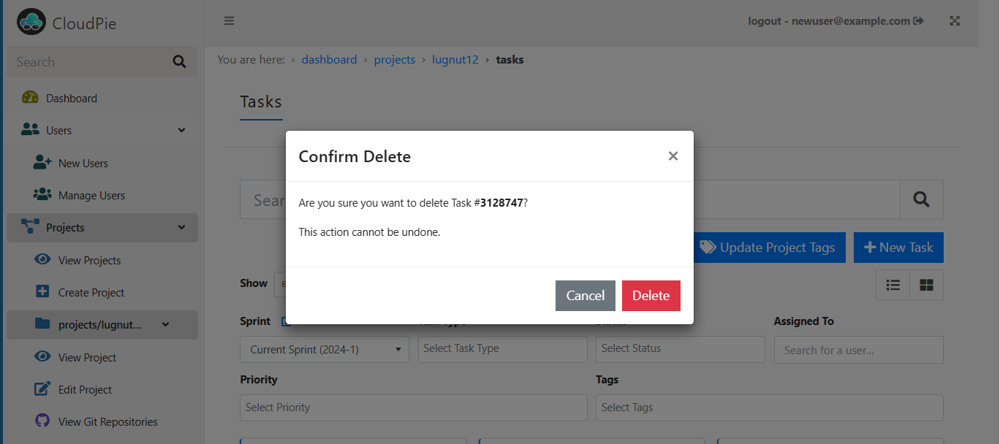

Managing Tasks in Projects
The Tasks section allows users to manage project tasks efficiently. Users can create, edit, and delete tasks, manage task relationships, and filter tasks based on various criteria. Below are the detailed steps for each action:
Accessing the Tasks Section
- Navigate to the Dashboard and select the desired project.
- Click on the Tasks menu in the sidebar scoped to the selected project.
- The Tasks page will open, displaying:
- A search bar to search tasks by title or ID
- Dropdown filters to refine tasks by:
- Sprint
- Task Type
- Status
- Assigned To
- Priority
- Tags
- Tasks displayed in card view
Example Image: Viewing Tasks

Managing Sprints
Creating a Sprint
- Click the Create Sprint button to open the sprint creation dialog.
- Fill in:
- Start Date
- End Date
- Sprint Goal
- Note:
- Sprints are sequential and named automatically based on the year
- Sprint dates cannot overlap with other sprints
Example Image: Creating a Sprint

Editing a Sprint
- Use the Edit Sprint button located next to the sprint filter dropdown.
- Update the sprint's start date, end date, or goal.
- Sprint dates still cannot overlap with existing sprints.
Example Image: Editing a Sprint

Managing Tags
- Click the Update Project Tags button to open the tag management dialog.
- Add or remove tags that can be used for task filtering.
Example Image: Managing Tags

Managing Tasks
Creating a Task
- Click the New Task button to open the task creation dialog.
- Fill in:
- Title and Description
- Due Date
- Tags
- Priority
- Assigned To
- Whether the task should be added to a backlog or a specific sprint
- Add task relationships (e.g., Parent of, Blocked by, etc.).
Example Image: Creating a Task

Editing a Task
- Click the Edit Task icon on an existing task to open the task editing dialog.
- Make changes to the task details, such as title, description, or assigned sprint.
- Add comments to the task for discussions.
Example Image: Editing a Task

Deleting a Task
- Click the Delete Task icon on an existing task.
- Confirm the deletion in the confirmation dialog.
- Once deleted, the task and its relationships will be removed.
Example Image: Deleting a Task
